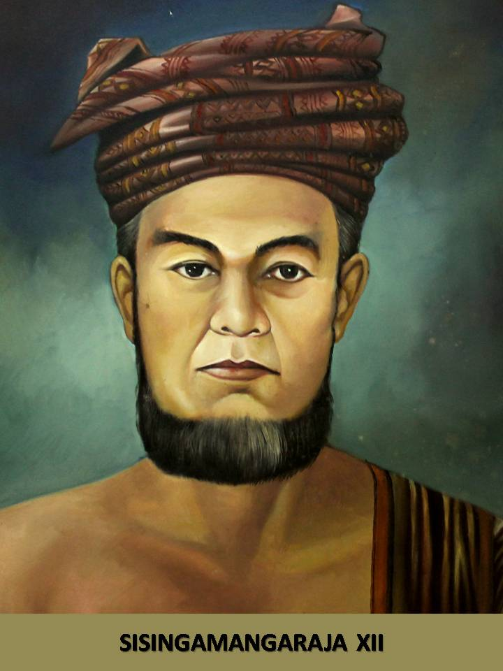

Mengenal perjuangan Sisingamangaraja XII dalam memimpin rakyat Batak melawan kolonialisme Belanda dalam Perang Batak.
Pelajari Perjuangannya ↓
Potret Sisingamangaraja XII
Perlawanan Sisingamangaraja XII bersama rakyat Batak terhadap pemerintah kolonial Belanda dikenal sebagai Perang Batak atau Perang Tapanuli.
Perlawanan berlangsung dalam periode panjang, terutama sejak tahun 1878 hingga 1907.
Patuan Bosar Ompu Pulo Batu atau Sisingamangaraja XII merupakan pemimpin masyarakat Batak dan tokoh utama perlawanan terhadap Belanda.
Tokoh yang berkaitan dengan gerakan Parmalim serta perjuangan mempertahankan adat dan kepercayaan masyarakat Batak.
Salah satu panglima yang membantu perjuangan pasukan Sisingamangaraja XII.
Salah satu tokoh yang ikut terlibat dalam perjuangan rakyat Batak.
Perlawanan berlangsung di wilayah Tanah Batak dan Tapanuli, Sumatera Utara.
Belanda berusaha memperluas kekuasaan dan pengaruh kolonial ke wilayah Tanah Batak.
Masuknya pemerintahan kolonial mengancam kebebasan masyarakat dan sistem kekuasaan tradisional Batak.
Perkembangan misionaris menimbulkan kekhawatiran terhadap kepercayaan dan tradisi masyarakat Batak.
Perlawanan juga berkaitan dengan usaha mempertahankan adat, budaya, dan kepercayaan masyarakat Batak.
Pasukan Belanda memasuki wilayah Batak. Konflik berkembang menjadi peperangan melawan pasukan Sisingamangaraja XII.
Pasukan Sisingamangaraja XII melakukan perlawanan terhadap pos Belanda di Bahal Batu dan wilayah sekitarnya.
Perlawanan berlangsung di berbagai wilayah seperti Uluan, Balige, dan daerah sekitar Toba.
Belanda meningkatkan operasi militernya untuk melemahkan perlawanan rakyat Batak.
Belanda mengejar pasukan Sisingamangaraja XII hingga wilayah Dairi. Pada 17 Juni 1907, Sisingamangaraja XII gugur bersama sejumlah pengikutnya.
Perjuangan Sisingamangaraja XII menjadi salah satu bagian penting dari sejarah perlawanan rakyat Indonesia terhadap kolonialisme.
Setelah Sisingamangaraja XII gugur pada 1907, kekuatan utama perlawanan Batak semakin melemah.
Belanda semakin memperkuat penguasaannya di wilayah Tapanuli dan Tanah Batak.
Peperangan menimbulkan korban jiwa dan kerusakan di berbagai wilayah konflik.
Sisingamangaraja XII dikenang sebagai simbol keberanian dan perjuangan melawan penjajahan serta ditetapkan sebagai Pahlawan Nasional.
Membahas perkembangan Parmalim dan konteks sejarah masyarakat Batak pada masa kolonial.
Membahas Ugamo Malim, Sisingamangaraja XII, dan konteks sosial-keagamaan masyarakat Batak.
Memuat pembahasan mengenai tokoh dan kisah perjuangan Sisingamangaraja XII.